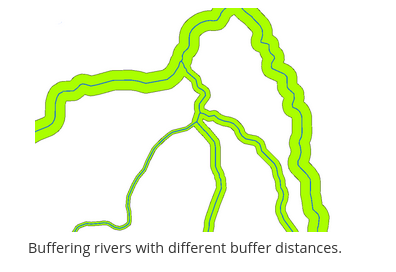
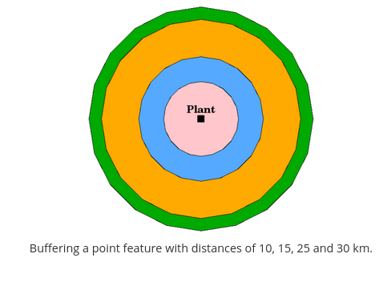
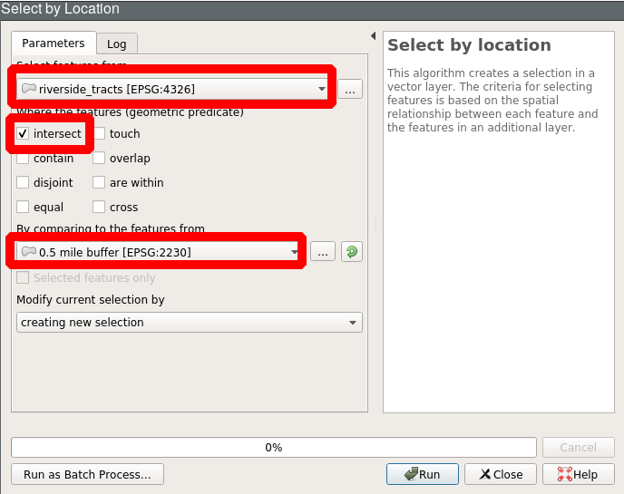
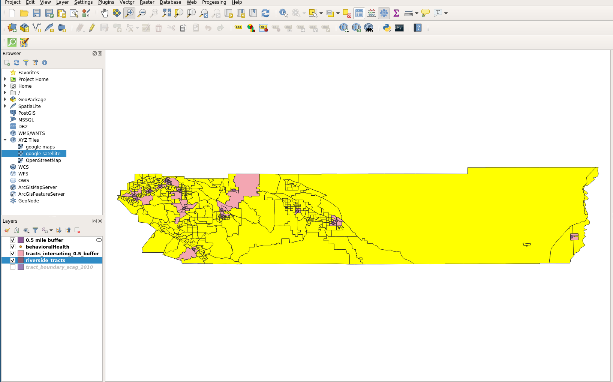
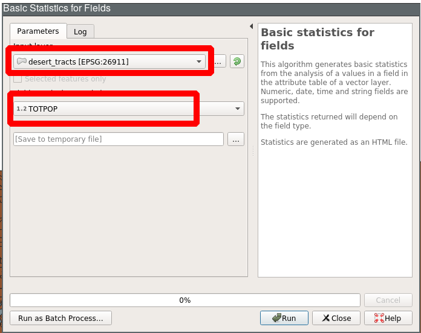
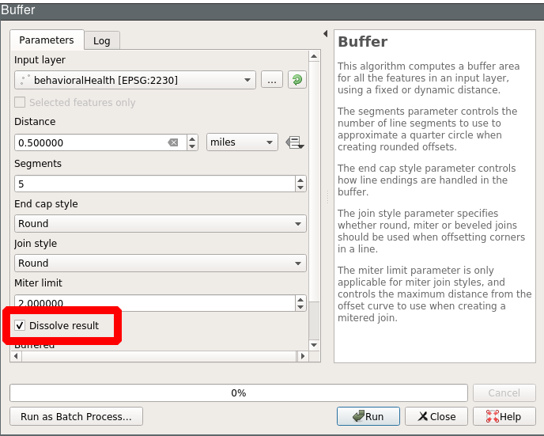
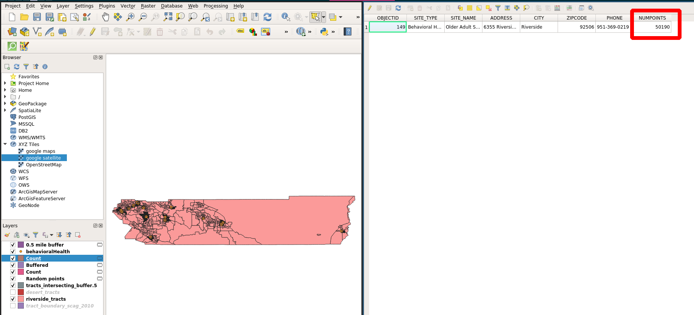

Vector Analysis¶

Today¶
- Deterministic Spatial Analysis
- Buffers and Buffering
- Select by Location
- Health Deserts
¶
Deterministic Spatial Analysis¶
Dimensions of vector geometries¶
- Point: 0-dimension
- Line: 1-dimensional (length)
- Polygon: 2-dimensional (area)
Spatial Relations¶

Dimensionally Extended nine-Intersection Mode (DE-9IM)¶


¶
Buffers and Buffering¶
Buffers¶

Buffers (Variable)¶

Buffers (Rings)¶

Buffers (Dissolve)¶
Buffering the Clinics¶
- food deserts: 0.5 mile distance
- use for the clinic points
- will revisit other distances later
.5 mile clinic buffer¶

buffer menu¶

buffer result¶

buffer result: geometry¶

buffer rename¶

¶
Buffering¶
Using the Buffers for Locational Analysis¶
- Find what tracts intersect with the buffers
- Create layer with these tracts
- Use: Select by Location
Processing: Select by Location¶
(Bring up Processing Toolbox with CTRL-ALT-T)

Processing: Select by Location Dialog¶

What tracts intersect with the .5 mile buffers?¶

Save Layer¶

Saved Layer¶

¶
Health Deserts¶
Traditional Approach¶
- Tracts *not* intersecting buffers
- Add up population in **desert polygons**
Identifying Clinic Desert Tracts¶

Clinic Desert¶

Clinic Desert Layer¶

What is the population residing in Clinic Desert?¶
Desert Tracts Tables¶

Basic Statistics for Fields¶
Basic Statistics for Fields: Dialog¶

Basic Statistics for Fields: Results¶

Basic Statistics for Fields: File¶

Basic Statistics for Fields: File¶

Total County Tract Population¶

Population Estimates¶
County Total: 2,189,641
In Clinic Desert Tracts: 1,881,643
In Buffer Tracts: 307,998
Population with access problems: 1,881,643
Issues in measuring access to clinics¶
all individuals in the tracts intersecting the buffers are in the buffer
overestimation of people within .5 miles of a clinic
underestimation of people in the clinic desert
Why overestimation of buffer population?¶

We can do better¶
Buffer Tracts¶

Random Points¶

Random Points Generated¶

Random Points Layer¶

Random Points Layer Symbology¶

Random Points Layer¶

Count points in buffers: Layers¶

Count points in buffers¶

Points in polygons¶

Count Field¶

Count Summary¶

Count Table¶

Revised Estimates¶
County Total: 2,189,641
In Clinic Desert Tracts: 1,881,643
In Buffer Tracts: 307,998
90,630 in buffer, in tract
217,358 out of buffer, in tract
Population with access problems: 2,099,011
Population within .5 miles of clinic: 90,630
Issue¶
double counting
points contained in more than a single buffer are counted more than once
Overlapping Buffers¶

Count Table With Overlapping Buffers¶

Fix¶
dissolve on buffering
Buffer and Dissolve¶

Dissolved Buffer¶

New Buffer¶

New Buffer Feature Count¶

Points in Polygon Count¶

Population within .5 Miles of a Clinic¶

Revised Estimates¶
County Total: 2,189,641
In Clinic Desert Tracts: 1,881,643
In Buffer Tracts: 307,998
50,190 in buffer, in tract (no double counting)
257,808 out of buffer, in tract
Population with access problems: 2,139,451
Population within .5 miles of clinic: 50,190
Next Up¶
Vector Analysis: Clipping and Spatial Joins